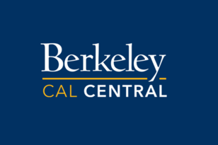

During the Spring of 2020, I was a member of a team of 3 graduate students contracted to conduct UX research for UC Berkeley’s online student portal over a 4-month period.
CalCentral, UC Berkeley's online student portal, didn't have a good framework for increasing student engament with the platform. So, they tasked myself and two other graduate students in the UC Berkeley School of Information to undertake UX Research for them.
To answer the question of how to increase student engagement, we utilized three separate methods – a diary study, virtual interviews (virtual due to COVID-19), and virtual contextual inquiries. My role was as acting project manager as well as researcher. Not only did I create our research timeline and ensure that everything was completed on time, but I also wrote the script for the contextual inquiries, helped to write the script for the interviews, and conducted a majority of the contextual inquiries as well as several of the interviews. The research itself took place over a period of approximately one month, and we delivered our results to the CalCentral team in May of 2020.
We delivered a comprehensive research framework for CalCentral to utilize in any future research questions they may have. Additionally, after presenting our findings and recommendations to CalCentral, they updated their website to reflect our research. One of the addages was a notifications tab that syncs with a separate student portal that houses their assignments, pictured below and outlined in red for clarity.